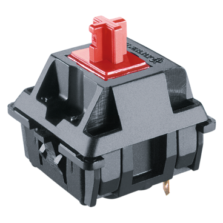
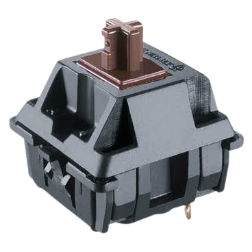
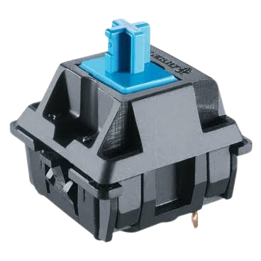

Cherry MX Red Тип свитча: Линейный Сила нажатия: 45г Ход до срабатывания: 2мм  Подробнее...
Cherry MX Brown Тип свитча: Тактильный Сила нажатия: 55г Ход до срабатывания: 2мм  Подробнее...
Cherry MX Blue Тип свитча: Кликающий Сила нажатия: 60г Ход до срабатывания: 2.2мм  Подробнее...